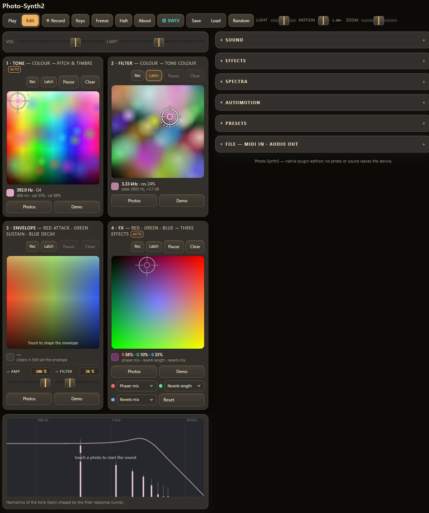
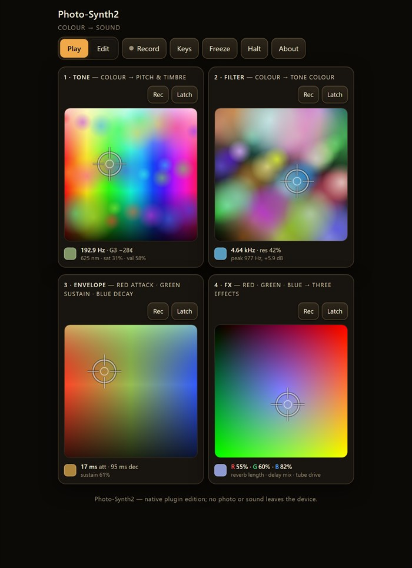
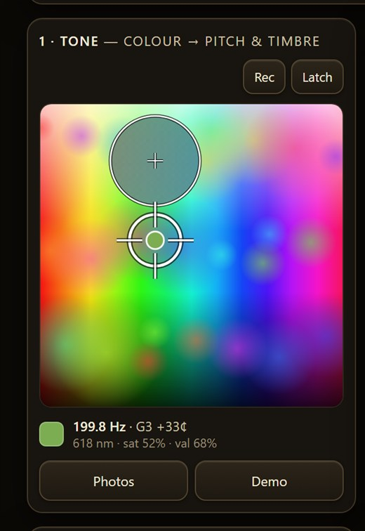
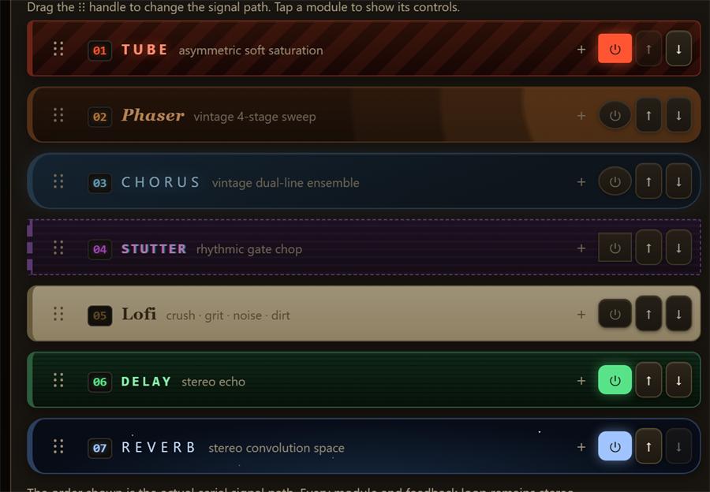
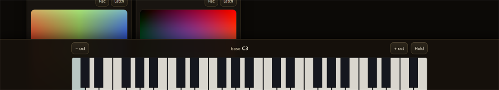

Play the colours of four photographs.
A synthesiser you play by dragging across pictures. Colour becomes pitch and timbre on the first photo, the second one filters it, the third shapes the envelope, and the fourth drives the effects. Runs in any VST3 host as a native plugin â the whole audio engine is C++, and every control is automatable.

Four photo pads, each listening to colour in a different way. They all work at once, and each can be latched in place or set looping along a gesture you drew â so the instrument keeps moving on its own while you play something else.
Hue picks the note, saturation morphs the waveform from sine to saw, brightness sets the loudness, green adds detune and vocal edge.
Brightness sweeps the ladder cut-off from 80 Hz to 14 kHz, saturation adds resonance, hue places a resonant peak.
Red is the attack, green the sustain level, blue the decay and release. Pick a colour and the instrument changes how it feels.
The red, green and blue strengths each drive an effect parameter you assign. Black is all off, white is all full.



A virtual-analog voice: two band-limited oscillators that drift a few cents apart, a zero-delay-feedback ladder filter with a saturating core and five modes including a tuned comb, a sixteen-voice pool â mono/unison with up to twelve stacked voices, or four-note polyphony with up to four photo-sampling oscillators per note. Selectable waveforms, a Dark Drone engine, tape stop, delay freeze, a transparent output limiter, MIDI file playback, 24-bit recording and offline render.
Two minutes. There is no installer â a VST3 plugin is a folder you copy into place.
vst3-apps/photo-synth-2/.Photo-Synth2.vst3 folder,
the manual, and a readme.Photo-Synth2.vst3 folder â not just the file inside it â
into C:\Program Files\Common Files\VST3\. Windows will ask for administrator
permission; that is normal.| Requirement | Detail |
|---|---|
| System | Windows 10 or 11, 64-bit |
| Build | 260821.2 — shown in the plugin’s How it works panel and on its loading screen |
| Format | VST3 (also builds as a standalone application from source) |
| Hosts | Any VST3 host â developed against Ableton Live 12 |
| Price | Free. No account, no registration, no telemetry, no network access. |
The manual has a five-minute quick start, a full control reference and nine things to try. A few highlights:
Set unison to 8 voices and spread to 30 px, then put the cursor on a detailed part of the picture. Detail scatters the voices into a chord; smooth gradients collapse them into a thick unison.
Arm Rec on photo 2 and draw a circle. The cursor loops your gesture forever, sweeping the filter along the colours of the picture instead of an LFO.
Comb filter, latch both cursors, engage Dark Drone with cluster detune and a long slow drift. Leave it running: it never quite repeats itself.

Photo-Synth 2 started life as a page in a browser. The method that turned it into a plugin â without redrawing a single control â is packaged as a developer kit.
The trick is that the plugin's interface is the original web page: it runs inside the plugin window, and only its audio layer was replaced, by proxy objects that marshal into a C++ engine. Everything the page did â layout, canvas drawing, gestures, presets â still works because it is still the same code. The kit contains the method as a skill an AI assistant can load, working code templates, six PowerShell tools, and a 17-page manual including the list of traps that each cost a day.
Visual Studio, CMake, JUCE and WebView2, with a script that checks the toolchain and prints the exact build commands.
Drop it into .claude/skills/ for Claude Code, or paste
the portable prompt into ChatGPT or a VS Code chat extension.
A folder on your PC or a GitHub page. It works through eight phases, building in Release after each one.